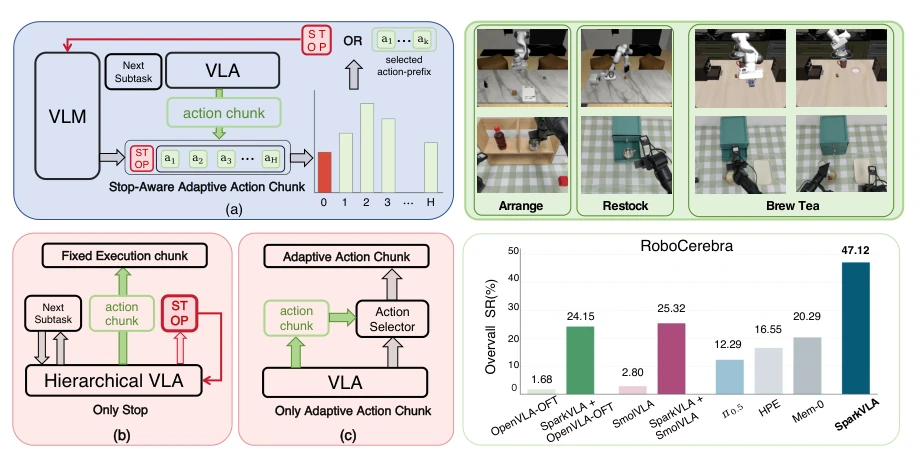
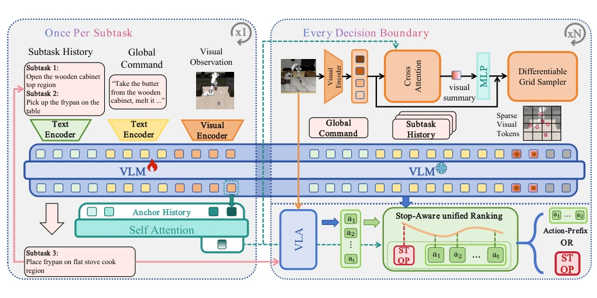
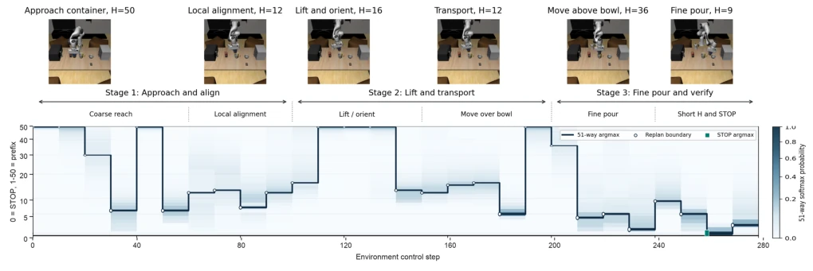
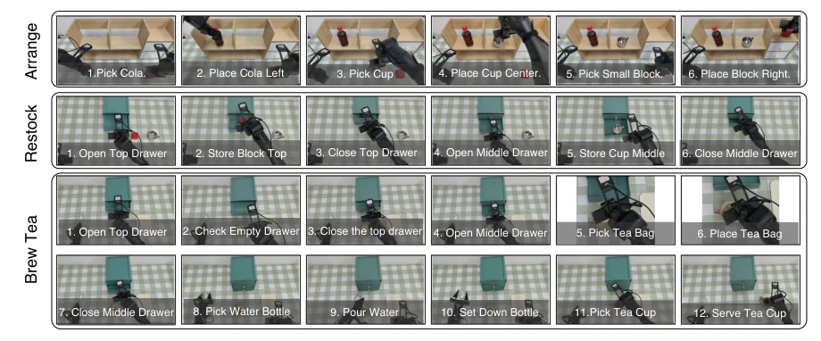
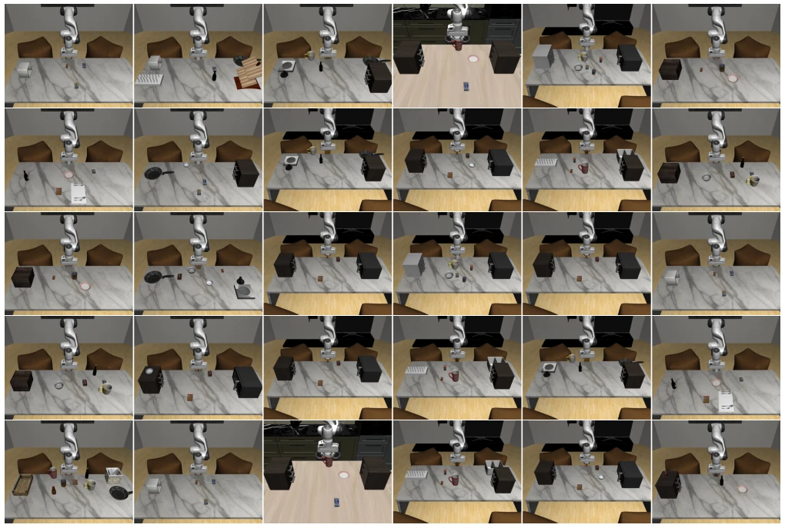

This paper offers a potent remedy for the "interface sickness" inherent in hierarchical VLA. Previous methods either rigidly fix lengths or guess stopping points blindly; SparkVLA cleverly scores both "whether to stop" and "how far to go" within a unified pool. However, relying on offline ordinal preference training, while generalization on real hardware appears promising, online adaptation is not addressed; what if the environment changes suddenly? Additionally, the Anchor mechanism relies on intermediate layers of pretrained VLA; does this constitute a de facto "black box"? Regardless, it outperformed HPE by 30% on RoboCerebra, a solid result, though it remains unclear if it remains this stable after replacing the base like OpenVLA-OFT. Furthermore, although claiming no threshold tuning is required, whether the weight lambda setting in actual training is sensitive still requires observation. Overall, this is an ambitious attempt in long-horizon task interface design, resolving long-standing coupling issues through unified ranking, worthy of further tracking.
研究动机Motivation
分层 VLA 在长程任务上表现好，但接口决策是瓶颈。Yang et al. (2026) 指出终止条件是关键杠杆。现有方法如 HPE (Jiang et al. 2025) 用二元检测器，DEHP (Zhao et al. 2026) 和 ACH (Shin et al. 2026) 只能选长度，无法判断子任务完成。这种“信息不对称”导致过早停止或过度执行。SparkVLA 发现这两个决策本质是互依的，需要联合评估，而不是孤立模块能解决的。现有架构评估它们时是隔离的，导致模块无法单独克服这种不对称性。例如，最优停止点取决于执行器计划做什么，而最优执行长度取决于子任务边界在哪里。这种相互依赖性无法通过独立模块解决，需要联合评估。
Hierarchical VLA performs well on long-horizon tasks, yet interface decision remains a bottleneck. Yang et al. (2026) identify termination conditions as the key leverage. Existing methods such as HPE (Jiang et al. 2025) utilize binary detectors, while DEHP (Zhao et al. 2026) and ACH (Shin et al. 2026) can only select length, unable to judge subtask completion. This "information asymmetry" leads to premature stopping or over-execution. SparkVLA discovers these two decisions are essentially interdependent, requiring joint evaluation rather than being solvable by isolated modules. Existing architectures evaluate them in isolation, causing modules to be unable to overcome this asymmetry individually. For instance, the optimal stopping point depends on what the actuator plans to do, whereas the optimal execution length depends on where the subtask boundaries lie. This interdependence cannot be resolved through independent modules, necessitating joint evaluation.

Figure 1: Existing hierarchical VLAs either execute fixed-length chunks with a separate stop detector (b) or adapt the horizon without an explicit termination signal (c), addressing each decision in isolation. SparkVLA (a) unifies both into a single ranking over Stop and all action-prefix lengths, enabling joint adaptive execution and threshold-free subtask termination.
The overall architecture is hierarchical, with a high-level VLM generating subtask instructions and a low-level VLA generating action chunks. The core innovation lies in the Selector. First, Anchor-Conditioned Context Encoding extracts subtask anchors, fuses historical memory, and guides visual Token pruning (Grid-Sampler), focusing only on task-relevant regions. Second, the Stop-Aware Action-Prefix Selection Head unifies "stop" and "action prefix length" into a single candidate set. Through a full self-attention mechanism, each candidate (including Stop) can see the complete action chunk context. Training employs offline ordinal preference, combining Pairwise Ranking Loss with Stop-aware Auxiliary Loss, requiring no threshold tuning. Specifically, anchors are extracted from deep VLM layers, fused via self-attention, and visual Tokens are pruned via Grid-Sampler. The selection head is invoked at chunk boundaries, jointly scoring Stop and all action prefixes to select the highest-scoring option. This eliminates the need for threshold tuning, requiring only offline ordinal supervision.

Figure 2: Overview of SparkVLA. At each subtask onset, the high-level planner autoregressively generates a subtask command, extracts a raw anchor from the penultimate layer, and fuses it with the anchor history pool via self-attention to form a history- aware anchor. At every decision boundary, anchor-conditioned context encoding extracts task-relevant visual features, while the stop-aware selector ranks Stop against all action-prefix candidates.

Figure 3: Stop-aware action-prefix selection over a representative pouring episode. Top: observation frames at decision boundaries with selected prefix length. Bottom: the selected candidate (solid line) over environment steps, with softmax probability shown as a heatmap (darker = higher probability). Replan boundaries (circles) mark subtask transitions. Long prefixes dominate during coarse reach and transport, short prefixes appear during fine alignment, and Stop fires at task completion (green square).
On RoboCerebra, SR reaches 47.12%, 30.57% higher than HPE (Han et al. 2026). 98.5% on LIBERO. Average across three real hardware tasks is 69.3%. Ablation studies show the unified candidate set raises Stop Acc from 80% to 96.65%. Comparison baselines include OpenVLA-OFT, SmolVLA, and Mem-0. This demonstrates the high-level system's generalization capability across different low-level actuators. Specifically, significant improvements are observed on dynamic observation and memory exploration tasks; the adaptive prefix shortens execution prior to contact events and extends it in free space. Real hardware experiments validate the qualitative transfer of the policy on physical hardware, although the current evaluation focuses on fixed-category desktop operations.

Figure 4: Real-world task rollouts. Top to bottom: Shelf Arrangement (6 subtasks), Drawer Restocking (6 subtasks), Tea Preparation (12 subtasks).

Figure 5: Representative RoboCerebra simulation scenes. From left to right, the columns show Dynamic Randomization, Dynamic Observation, Memory Exploration, Memory Execution, Mix, and Ideal; rows contain distinct held-out task instances.